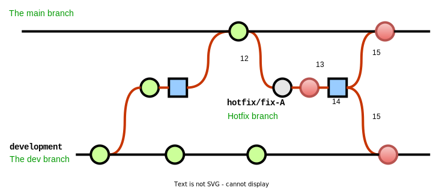

Introduction
This post will give a brief introduction and explanation to Git and Git workflows, and then go into detail for the most prominent workflows (in my experience), when to use them, as well as the main pros and cons of each approach.
Background
Git introduction
For those unfamiliar, Git (as defined on git-scm.com) is a free and open source distributed version control system, designed to handle everything from small to very large projects with speed and efficiency.
This post will not go into the details of Git, but some characteristics:
- Distributed
- Fast
- Efficient
- Cheap and simple branching
- Has a learning curve - but very easy to use once understood
Some notes:
- Point 4: This is the key to Git. Creating and working with branches is simple and quick.
This is key to most well working workflow. - Point 5: This is the opposite of what is described on git-scm.com, which states that Git is
easy to learn. I have found that this is not the case, especially when coming from a background of a source control system such as SVN or Azure Devops TFVC. However once the basics are understood, then it is easy to use.
Git branches
When using Git, there are usually two types of branches used:
Long-lived branches: These are permanent branches in the repository. A repository will often have two long-lived branched calleddevelopmentandmain (or master)Short-lived branches: These are temporary branches created for a specific purpose (such as adding a new feature), and are deleted once they have served their purpose. Generally these branches follow a naming standard, oftenfeature/issue-number,feature/description- but this is flexible and up to do team to decide. However, whichever standard is chosen, it should be consistently used when naming branches.
Working through the various workflows below will add to and expand on the above definitions.
Workflow introduction
In this context, a workflow is simply a recipe or recommendation for how to use Git to accomplish work in a consistent and productive manner. Typically for software development, this work involves code being released into production, and is usually facilitated by a build server and CI/CD pipelines (using GitHub Actions, Azure Devops Pipelines, Jenkins, for example)
Below a number of popular widely accepted best practice workflows will be described (Git Flow and GitHub Flow), as well as two workflows I've personally experienced being used extensively in certain use cases.
Workflows
The diagram legend:

A note on builds - In the below workflow explanations, when a build is mentioned, it can be done in one of two ways:
Build configuration method: multiple artifacts are produced, each one with a different build configuration (dev, test, production). As multiple artifacts are being produced, this usually is a longer process, and a more legacy approach (but still valid).Environment variable method: one artifacts is produced, and the configuration (dev, test, production) is determined by an environment variable injected into the application on startup. The benefit of this approach is one can ensure that the exact same code is deployed to all environments, and as only one artifact is produced, the process is quicker. This is a newer approach.
Solo Flow
Solo Flow explained:
This is the simplest of flows, and doesn't involve any additional branches. Solo Flow is named as such as only one branch is involved (usually main) and typically this flow would be used by a solo developer. The single branch is long-lived and exists for the entirety of the repository.
Pros:
- Very simple to implement
Cons:
- Branch is not consistently stable *
- A hotfix could cause complications **
- Doesn't scale to multiple developers easily
When best to use:
- When only an individual developer is working in the repository
- When the code is not going to have "releases" - such as scratchpad, playpen or proof of concept/technology repositories
Solo Flow process:

- Code is committed directly into the main branch
- A build is done, and released to the relevant environment. Usually this is
dev -> test -> productionproceeding through each environment as the release is tested and signed off - If a hotfix is required, the fix is committed to the main branch, tested and then released
Additional notes:
* Stability:
At any given time, it is not known if the branch is stable or notas the code in the main branch would not necessarily have been tested. For example, in the diagram at point *, if a hotfix would be required, there is no guarantee that the current state of the branch is stable, as the previous build or commit may not have been tested.** Complications: Related to the previous point, if an urgent hot fix is required, it may cause complications as there could be
untested commits which would "interfere" with the hot fix release. In the example, the previous commit, which is unrelated to the hotfix, would now need to be included in the hotfix release (tested or not), or a number of Git operations would need to be performed to try undo the untested code.
First Flow
First Flow explained:
This is the simplest of flows which makes use of multiple branches. Named First Flow as it is most likely the first flow one might use involving multiple branches. Two long-lived branches exists with this flow, usually development and main, and exist for the entirety of the repository
Pros:
- Very simple to implement
- Main branch is fairly stable *
Cons:
- A hotfix may cause complications **
- Doesn't scale to multiple developers easily
When best to use:
- When only an individual or very small (1-3) number of contributors are working in the repository
First Flow process:
- The development branch is initially, once off, branched from the main branch
- Code is committed directly into the development branch
- A build is done, and released to the development environment
- Once dev-tested in the development environment, the code is merged (via a pull request) into the main branch
- Another build is then done and released to the relevant environment. Usually this is
test/uat -> productionproceeding through each environment as the release is tested and signed off - If a hotfix is required, the fix is committed to the main branch, a build created, tested and then released. The hotfix code is also merged back into the development branch
Additional notes:
* Stability: As with the
Solo Flow, the situation regarding stability is the same,at any given time, it is not known if the branch is stable or not. However, with theFirst Flowthe code has been deployed to and tested in a development environment before being merged into main. This does obviously not mean its stable once merged into main, however it is more stable when compared with theSolo Flow.
For example, in the diagram at point *, when the hotfix is required, there is no guarantee that the current state of the branch is stable, as the previous build or commit may not have been tested.** Complications: As with the
Solo Flow, if an urgent hot fix is required, it may cause complications as there could beuntested commits which would "interfere" with the hot fix release. In the example, the previous commit, which is unrelated to the hotfix, would now need to be tested and included in the hotfix build., or the main branch would need to somehow be reverted back to before the commit
Gitflow
Gitflow explained:
The Gitflow workflow is an industry standard workflow, and has gained in popularity in the past few years. It has fallen slightly out of popularity in favour of trunk based workflows (such as GitHub Flow described below), however it still has its place.
It especially works well when facilitating a more traditional release model, releasing to production on a known schedule (e.g. every two weeks). It is not suited to the model of releasing multiple times per day, as the flow of code through the workflow can take time.
Pros:
- Main branch is always stable *
- Scales well with large number of developers
- Handles hotfixes well **
- Code reviews can be built into the workflow process ***
Cons:
- Complicated workflow
- Takes time to push code through the workflow
When best to use:
- When there are a number of contributors to the repository (although the workflow does also work with smaller teams as well)
- When the product is to be released on a known scheduled (e.g. every two weeks)
Gitflow process:

- The development branch is initially, once off, branched from the main branch
- For any changes (apart from production hotfixes), a new short-live feature branch is created from the development branch
- Code is committed into the feature branch
- Once the coding is completed, the feature branch is merged into the development branch (via a pull request). Commits are not permitted directly into development branch, all code commits are done via pull requests
- A build is done and released to the development environment
- Once dev-tested in the development environment, a new short-lives release branch is created from the development branch
- A build is done from this release branch and released initially into the tst environment
- If testing is not successful, the release branch is abandoned and deleted
- A new feature branch will be created to address the cause of the release failing testing in step 8, and steps 2-8 are repeated
- Once testing has been completed successfully it is released into the production environment
- The release branch is then merged into the main branch (via a pull request) and deleted

- If a hotfix is required, a short-lived hotfix branch is created from the main branch
- The code fix is committed into the hotfix branch, a build is done and released into the tst environment
- Once the build has been successfully tested, it is then released into the production environment
- The hotfix branch is then merged into the main as well as the development branch, and then deleted
Additional notes:
* Stability: With the
Git Flowworkflow, code is only merged into the main branch once is has been tested and released into production. Therefore at any given time, the code in the main branch should be stable and tested, and is a snapshot of the current state of the production environment.** Complications: With
Git Flow, as the code in the main branch is always a snapshot of the current production environment, if an urgent hot fix is required, the main branch will not have any untested committed code which can cause complications with the hotfix release.*** Code reviews: In step 4 above, the merging of the code is done via a pull request. The pull request mechanism easily facilities code reviews as it allows for review of all the code being merged before approval. As the pull request process is built into the
Git Flowworkflow, a code review process is also (optionally, but recommended) built into the process.
GitHub Flow
Gitflow explained::
The GitHub Flow workflow is also an industry standard workflow - which came about and has gained in popularity due to its simplicity.
Even though, as the name described, the GitHub Flow is primarily used when working with GitHub, it is not limited to only being used on GitHub and can be used on any platform with a Git repository.
This workflow works especially well when doing production deployments often, not largely based around a scheduled release. It is well suited to the model of releasing multiple times per day, as it is simple and fast to get code through the workflow.
Pros:
- Very simple process
- Main branch is always stable *
- Scales well with large number of developers
- Handles hotfixes well **
- Code reviews can be built into the workflow process ***
Cons:
- Stricter controls and discipline required to make it work successfully ****
When best to use:
- When there are a number of contributors to the repository (although the workflow does also work with smaller teams as well)
- When the product is to be released often, not necessarily on a set schedule (daily or multiple times per day)
- When the team has mature processes, checks and balances in place (unit tests, code reviews, dev standards)
Gitflow process::

- Only one long-lived main branch exists
- For any changes, a new short-live feature branch is created from the main branch
- Code is committed into the feature branch
- Either during or after the coding process a pull request is created to merge into main - but not approved (yet)
- Once the code has been reviewed and discussed, a build and release is performed, proceeding, usually, through the
dev -> test -> productionenvironments - The pull request is approved and the code merged into main, and the feature branch deleted
- Hotfixes follow the same process as features, following steps 2-6
Additional notes:
* Stability: With the
GitHub Flowworkflow, one of the hard rules is that anything is main is deployable. Therefor at any given time, the code in the main branch has to be stable, and should be code is only merged into main once tested.** Complications: As the code is being released into production as it is being "completed" (and reviewed and tested), there is almost always not complications with hotfix releases, as the code in the main branch is a snapshot of the latest code. Hotfixes and features are treated and released the same way.
*** Code reviews: In step 4 above, the merging of the code is done via a pull request. The pull request mechanism easily facilities code reviews as it allows for review of all the code being merged before it is approved. As the pull request process is built into the
GitHub Flowworkflow, a code review process is also (optionally) built into the process. However, as this flow is a lot "faster" than theGitFlow, the code review process is highly recommended and should always be part of the release pipeline.**** Controls: Even though the workflow is very simply, it requires strict controls and discipline from the team to make it work, even under tight deadlines (which is often when steps and reviews are skipped). Due to the workflow's rapid release nature, the pull request discussions and code reviews are essential in making sure that the code released and merged into main is quality code. Relevant unit tests should also be a high priority (they should always be a high priority, but especially with this workflow) to facilitate quick, but thorough testing and turn around time to release into the production environment.
Conclusion
You should now have an understanding of a number of different workflows, their pros and codes and when to best use them. The workflows described in this post are by no means the only ones available, but are the most common and practical in a real world environment.
A workflow shouldn't be a hindrance or a bottleneck, but should facilitate and improve the process of getting code released. As a developer or a team of developers, you will need try a number of workflows, and adopt one which makes sense and works for you or the team.